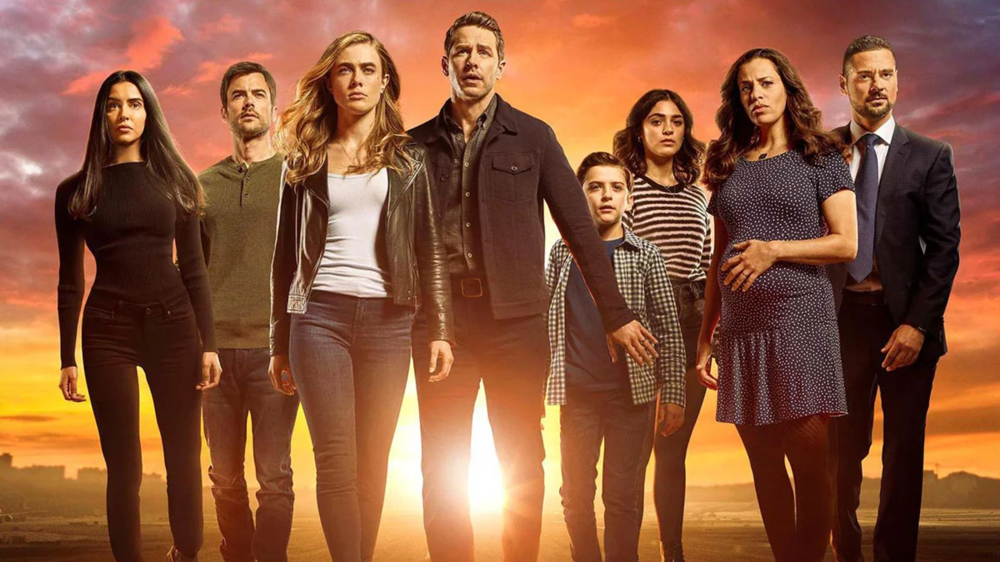

Manifest é uma série de drama, mistério e ficção científica, criada por Jeff Rake e estreada em 2018.
A história acompanha os passageiros do voo 828, que desapareceu durante uma viagem e regressam cinco anos e meio depois. Para eles, apenas tinham passado algumas horas.
A série tem quatro temporadas, nas quais os passageiros tentam descobrir oque aconteceu durante o desaparecimento do avião e compreender os misteriosos Chamamentos.

Podes encontrar a série na netflix .